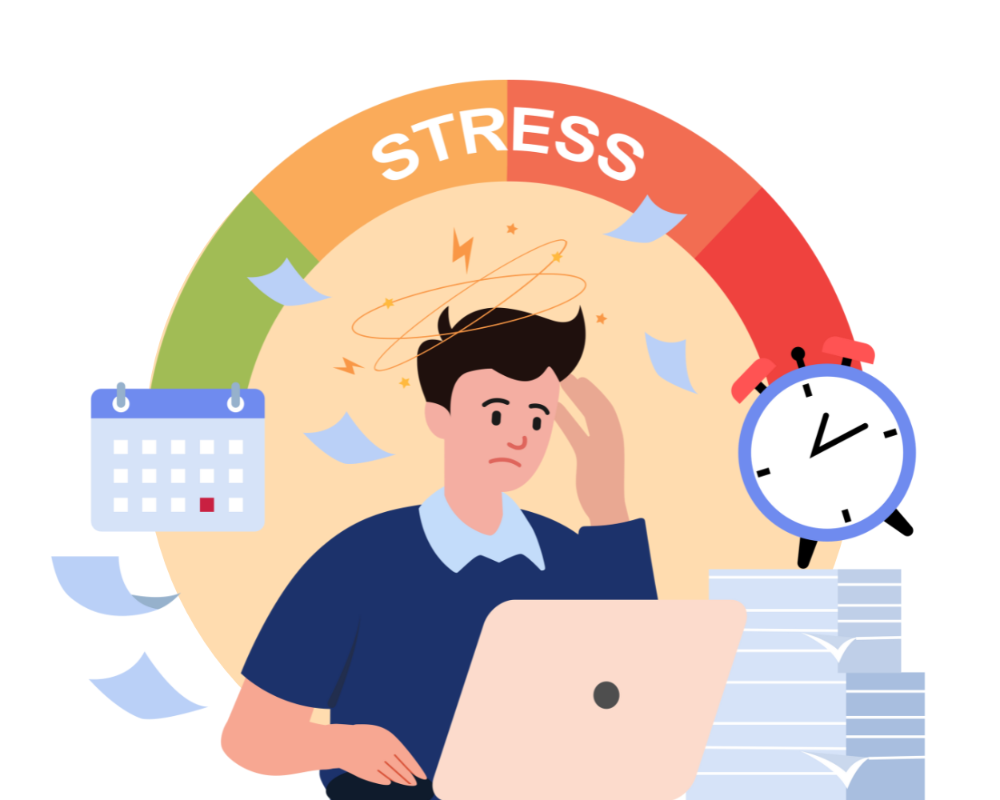
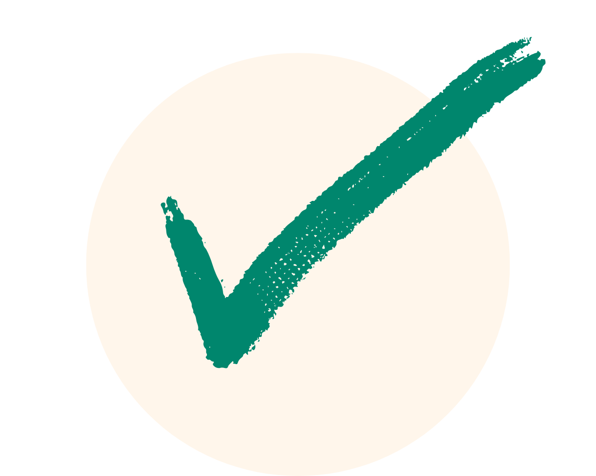

Branscher som påverkas mest av ökad stress
Stressnivåerna har ökat mest inom servicebranschen, med bygg- och tillverkningssektorn
tätt efter. Dessutom upplever mer än en tredjedel av de anställda att de saknar möjlighet att
påverka sin arbetssituation efter pandemin, vilket särskilt gäller inom servicebranschen.
En negativ trend
De senaste tre åren har många arbetsplatser sett en försämring av arbetsmiljön. Stressnivåerna har stigit samtidigt som möjligheten till återhämtning har minskat sedan pandemins början. Idag uppger nästan 40 procent av medarbetarna att de känner sig stressade och upplever dålig återhämtning, jämfört med cirka en tredjedel i pandemins inledande skede.
Klicka på de gula knapparna nedan för att läsa mer:


Negativa konflikter på arbetsplatsen
Kartläggningen visar också att ungefär var fjärde medarbetare upplever negativa konflikter
på arbetsplatsen, och problemet har inte förbättrats över tid. Konflikter är särskilt vanliga inom
service-, bygg- och tillverkningsbranscherna, medan de förekommer mindre ofta i tjänstebranschen.
Om undersökningen
Denna analys bygger på över en miljon svar från medarbetarundersökningar som Brilliant Future
genomförde mellan 2019 och 2023. Syftet med undersökningen var att kartlägga den organisatoriska
och sociala arbetsmiljön för att bättre förstå arbetsrelaterad stress och konflikter.

Sammanfattning av nyckelfakta
- 40 procent upplever ökad stress och bristande återhämtning
- Servicebranschen är mest utsatt för stress och konflikter
- Var fjärde medarbetare rapporterar om negativa konflikter